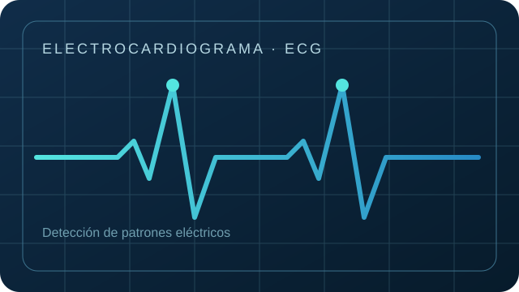
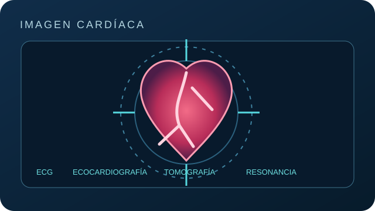
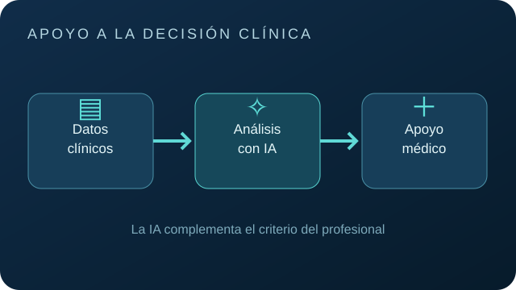
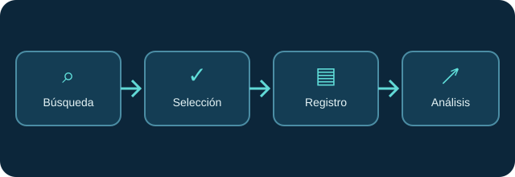
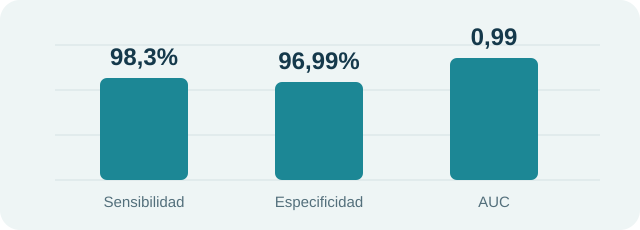
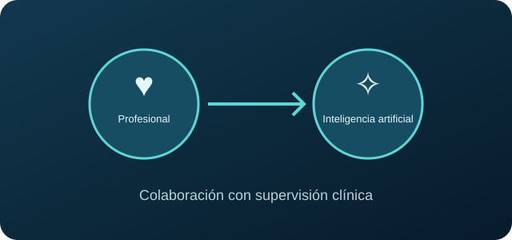

Electrocardiograma (ECG)
Los algoritmos procesan la actividad eléctrica del corazón e identifican patrones relacionados con fibrilación auricular, arritmias y posibles signos de insuficiencia cardíaca.
INTRODUCCIÓN A LA INVESTIGACIÓN · 2026
REVISIÓN NARRATIVA
Una mirada a las herramientas utilizadas en cardiología, la evidencia sobre su precisión diagnóstica y los desafíos para su aplicación clínica.
01 / CONTEXTO DEL PROBLEMA
Las enfermedades cardiovasculares son la principal causa de muerte en el mundo. Detectarlas de manera temprana y precisa es una prioridad para los sistemas de salud.
La cardiología produce datos cuantificables —como electrocardiogramas, ecocardiografías, angiografías y resonancias magnéticas cardíacas— que pueden ser analizados mediante herramientas de inteligencia artificial.
La relación entre el uso de herramientas de IA y la precisión del diagnóstico cardiológico en profesionales de la salud, según la evidencia científica publicada entre 2021 y 2026.
Base del planteamiento: Ahmed et al. (2025), Niazai et al. (2025), Patel et al. (2025), Lanzagorta-Ortega et al. (2022).
02 / HERRAMIENTAS QUE SE APLICAN EN CARDIOLOGÍA
Los estudios revisados describen modelos que analizan señales eléctricas, imágenes médicas y datos clínicos para apoyar tareas diagnósticas.

Los algoritmos procesan la actividad eléctrica del corazón e identifican patrones relacionados con fibrilación auricular, arritmias y posibles signos de insuficiencia cardíaca.

El aprendizaje profundo puede apoyar la clasificación, detección y segmentación de estructuras en ecocardiografías, tomografías y resonancias magnéticas.

Los sistemas de apoyo a la decisión clínica integran información y ofrecen alertas o sugerencias al profesional. Complementan el juicio médico, no lo sustituyen.
Aplicaciones descritas por Ramos-Zaga (2025), Orbea Fernández et al. (2026), Escobar Suarez et al. (2025) y Jeong & Kim (2026).
03 / METODOLOGÍA · PRIMERA PARTE
El estudio se desarrolló como una revisión narrativa. Se eligió este enfoque porque los estudios presentan diferencias en algoritmos, poblaciones y métricas, lo que dificulta una síntesis cuantitativa directa.
Se consultaron bases de datos académicas: PubMed, Scopus, SciELO, Dialnet y Google Académico, priorizando revistas indexadas y revisadas por pares.
Se combinaron términos en español e inglés mediante operadores AND y OR, por ejemplo:
Artículos originales, revisiones sistemáticas y metaanálisis indexados, en español o inglés, sobre IA aplicada al diagnóstico cardiovascular y que reportaran métricas de precisión.
Estudios solo de tratamiento o pronóstico sin componente diagnóstico, editoriales sin evidencia empírica, duplicados y textos completos no disponibles.
Métricas consideradas: sensibilidad, especificidad, área bajo la curva ROC y exactitud.
04 / METODOLOGÍA · SEGUNDA PARTE
La selección se realizó colaborativamente para reducir el sesgo individual.
De cada estudio se registró:
Luego se realizó un análisis descriptivo e integrador para identificar coincidencias y contrastes.
Al utilizar fuentes secundarias de acceso público, no se requirió aprobación de un comité de ética institucional.
Se citaron las fuentes según APA 7.ª edición y se dejó constancia del uso complementario de IA como apoyo conceptual y de organización de la búsqueda.

05 / RESULTADOS DE LA REVISIÓN
Las herramientas identificadas incluyen aprendizaje automático tradicional, aprendizaje profundo y sistemas de apoyo a decisiones clínicas.
Insuficiencia cardíaca
Sensibilidad combinada
Análisis de ECG y variabilidad de la frecuencia cardíaca.
Orbea Fernández et al. (2026)
Insuficiencia cardíaca
Especificidad combinada
Resultado combinado reportado en 14 estudios.
Orbea Fernández et al. (2026)
Fibrilación auricular
AUROC máximo reportado
Predicción mediante enfoques diagnósticos multimodales.
Ramos-Zaga (2025)

Cómo interpretar: sensibilidad identifica correctamente casos con la condición; especificidad identifica correctamente a quienes no la presentan; AUC mide capacidad discriminativa. Las cifras provienen de estudios y tareas diferentes: no deben compararse como si fueran un único experimento.
06 / INTERPRETACIÓN DE LOS HALLAZGOS
Orbea Fernández, Ramos-Zaga y Velandia coinciden en reportar resultados elevados, especialmente en ECG, imágenes cardíacas y señales fisiológicas. La IA puede reconocer patrones sutiles que complementan la evaluación clínica.
Los resultados varían según la herramienta, la fuente de datos y la enfermedad. Jeong y Kim describen mayores beneficios en radiología e imagenología que en consultas generales o urgencias, donde el contexto es más complejo.
Predominan estudios retrospectivos, cohortes reducidas y métricas heterogéneas. La falta de validación externa, la “caja negra”, el sesgo de automatización y la baja representación latinoamericana limitan la aplicación clínica.
Modelos explicables (LIME, Grad-CAM y SHAP), validaciones en poblaciones diversas, mejor gobernanza de datos, interoperabilidad y regulación. La IA debe integrarse en los flujos hospitalarios con supervisión profesional.

Su valor depende de la calidad de la evidencia, la validación en contextos reales y una implementación ética y clínicamente rigurosa.
07 / REFERENCIAS
Referencias citadas en el trabajo de investigación. Selección de las diez publicaciones que sustentan la revisión.